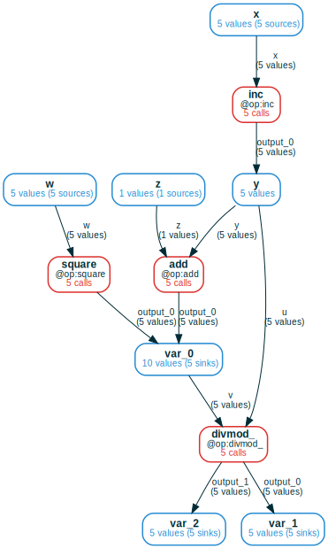

Advanced ComputationFrame tools

This section of the documentation contains some more advanced ComputationFrame
topics.
Set-like and graph-like operations on ComputationFrames
A CF is like a "graph of sets", where the elements of each set are either Refs
(for variables) or Calls (for functions). As such, it supports both natural
set-like operations applied node/edge-wise, and natural operations using the
graph's connectivity:
- union: given by
cf_1 | cf_2, this takes the union of the two computation graphs (merging nodes/edges with the same names), and in case of a merge, the resulting set at the node is the union of the two sets ofRefs orCalls. - intersection: given by
cf_1 & cf_2, this takes the intersection of the two computation graphs (leaving only nodes/edges with the same name in both), and the set at each node is the intersection of the two corresponding sets. .downstream(varnames): restrict the CF to computations that are downstream of theRefs in chosen variables.upstream(varnames): dual todownstream
Consider the following example:
# for Google Colab
try:
import google.colab
!pip install git+https://github.com/amakelov/mandala
except:
pass
from mandala.imports import *
storage = Storage()
@op
def inc(x): return x + 1
@op
def add(y, z): return y + z
@op
def square(w): return w ** 2
@op
def divmod_(u, v): return divmod(u, v)
with storage:
xs = [inc(i) for i in range(5)]
ys = [add(x, z=42) for x in xs] + [square(x) for x in range(5, 10)]
zs = [divmod_(x, y) for x, y in zip(xs, ys[3:8])]
We have a "middle layer" in the computation that uses both add and square.
We can get a shared view of the entire computation by taking the union of the
expanded CFs for these two ops:

Selection
TODO